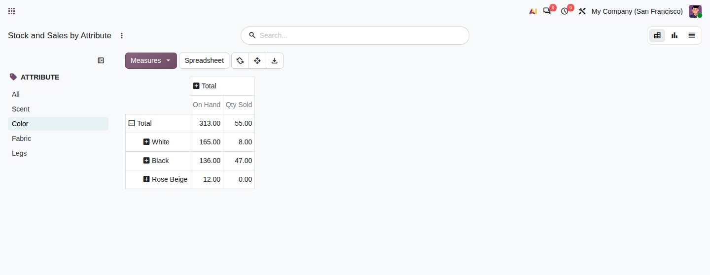
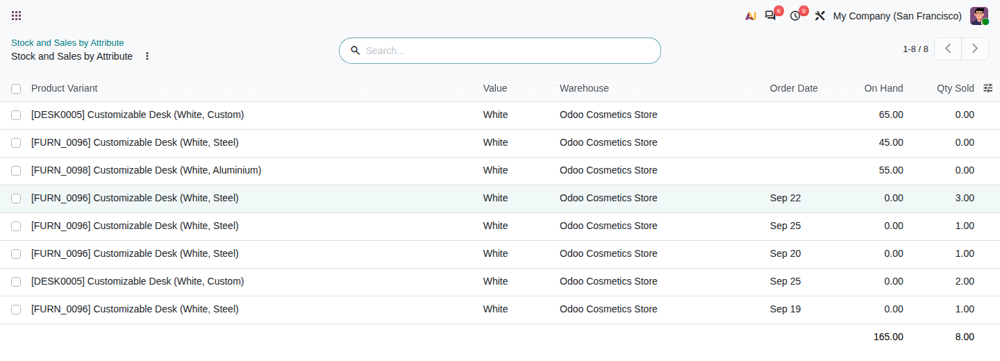

ODOO 20 · INVENTORY & SALES REPORTING
Stock on hand and quantity sold, by attribute value.
See which colours, sizes or thicknesses are in stock and which ones sell - across every product that uses them.
Pick an attribute on the left; its values become the rows of the pivot.
On Hand from internal locations, Qty Sold from confirmed sales orders, in the product's own unit.
New attributes appear on their own. Nothing to configure, no column per attribute.
Open Inventory › Reporting or Sales › Reporting › Stock and Sales by Attribute. The report opens on the first attribute with data; choose another in the Attribute panel.

Expand rows or columns by Product, Product Category, Warehouse or Order Date. The graph view shows the same data as bars.
Click a cell to list the variants and orders behind it, with totals.

| Measure | Counts |
|---|---|
| On Hand | Quantities in internal locations now, per warehouse. |
| Qty Sold | Confirmed sales order lines, converted to the product's unit, dated by order date. Quotations, cancelled orders, notes and down payments are left out. |
A variant counts once under each of its attributes, so totals hold within one attribute. The All entry of the panel adds them up across attributes and is not a stock total.
The Sold in the Last 30 / 90 Days / 12 Months filters narrow the sales period and keep the stock rows.
Point of Sale orders are not included. Screenshots show demo data in an Odoo 20 test database.